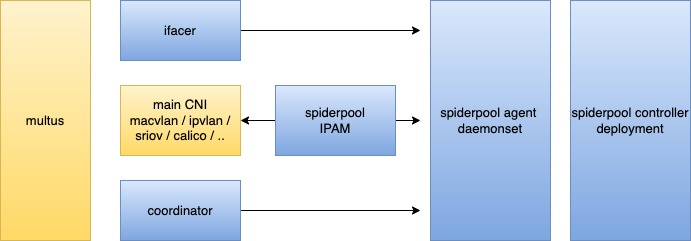
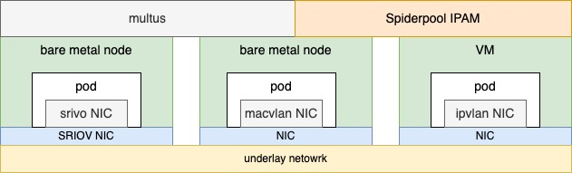

架构
underlay 网络 和 overlay 网络场景的比较
云原生网络中出现了两种技术类别，“overlay 网络方案” 和 “underlay 网络方案”， 云原生网络对于它们没有严格的定义，我们可以从很多 CNI 项目的实现原理中，简单抽象出这两种技术流派的特点，它们可以满足不同场景下的需求。
文章 对两种方案的 IPAM 和网络性能做了简单比较，能够更好说明 Spiderpool 的特点和使用场景。
为什么需要 underlay 网络解决方案？在数据中心的场景下，存在很多应用场景：
-
低延时应用的需求，underlay 网络方案的网络延时和吞吐量会优于 overlay 网络方案
-
传统主机应用上云初期，还延传统网络的对接方式，例如服务暴露和发现、多子网对接等
-
数据中心网络管理的需求，希望使用防火墙等手段对应用实施安全管控，希望使用传统的网络观测手段实施集群网络监控
架构

Spiderpool 架构如上所示，包含了以下组件：
-
Spiderpool controller: 是一组 deployment，实施了对各种 CRD 校验、状态更新、IP 回收、自动 IP 池的管理等
-
Spiderpool agent：是一组 daemonset，其帮助 Spiderpool plugin 实施 IP 分配，帮助 coordinator plugin 实施信息同步
-
Spiderpool plugin：在每个主机上的二进制插件，供 CNI 调用，实施 IP 分配
-
coordinator plugin：在每个主机上的二进制插件，供 CNI 调用，实施多网卡路由调谐、IP 冲突检查、宿主机联通等
除了以上 Spiderpool 自身的组件以外，还需要配合某个开源的 underlay CNI 来给 POD 分配网卡，可配合 multus CNI 来实施多网卡和 CNI 配置管理。
任何支持第三方 IPAM 插件的 CNI 项目，都可以配合 Spiderpool，例如： macvlan CNI, vlan CNI, ipvlan CNI, sriov CNI, ovs CNI, Multus CNI calico CNI, weave CNI
应用场景：一个或多个 underlay CNI 协同

如上所示，Spiderpool 工作在 underlay 模式下，可配合 underlay CNI （例如 macvlan CNI, sriov CNI ）实现:
-
为 underlay CNI 提供丰富的 IPAM 能力,包括共享/固定 IP、多网卡 IP 分配、双栈支持等
-
为 POD 接入一个或者多个 underlay 网卡，并能调谐多个 underlay CNI 网卡间的路由，以实现请求向和回复向数据路径一致，确保网络通信畅通
-
通过额外接入 veth 网卡和路由控制，帮助开源 underlay CNI 联通宿主机，实现 clusterIP 访问、应用的本地健康检测等
当一个集群中存在多种基础设置时，如何使用单一的 underlay CNI 来部署容器呢？
-
在一个集群中，部分节点是虚拟机，例如未打开混杂转发模式的 vmware 虚拟机，而部分节点是裸金属，接入了传统交换机网络。因此在两类节点上部署什么 CNI 方案呢 ？
-
在一个集群中，部分裸金属节点只具备一张 SRIOV 高速网卡，但只能提供 64 个 VF，如何在一个节点上运行更多的 POD ？
-
在一个集群中，部分裸金属节点具备 SRIOV 高速网卡，可以运行低延时应用，部分节点不具备 SRIOV 高速网卡，可以运行普通应用。但在两类节点部署上什么 CNI 方案呢 ？
结合 multus 的 CNI 配置管理和 Spiderpool IPAM 的通用性，可同时运行多种 underlay CNI，充分整合集群中各种基础设施节点的资源，来解决以上问题。

例如上图所示，在同一个集群下具备不同网络能力的节点， 有的节点具备 SR-IOV 网卡，可运行 SR-IOV CNI，有的节点具备普通的网卡，可运行 macvlan CNI ，有的节点网络访问受限（例如二层网络转发受限的 vmware 虚拟机），可运行 ipvlan CNI。
应用场景：overlay CNI 和 underlay CNI 协同

如上所示，Spiderpool 工作在 overlay 模式下，使用 multus 同时为为 POD 插入一张 overlay 网卡（例如 calico, cilium ）和若干张 underlay 网卡（例如 macvlan CNI, sriov CNI ），可实现:
-
为 underlay CNI 提供丰富的 IPAM 能力,包括共享/固定 IP、多网卡 IP 分配、双栈支持等
-
为 POD 的多个 underlay CNI 网卡和 overlay 网卡调谐路由，以实现请求向和回复向数据路径一致，确保网络通信畅通
-
以 overlay 网卡作为缺省网卡，并调谐路由，通过 overlay 网卡联通本地宿主机，实现 clusterIP 访问、应用的本地健康检测、overlay 网络流量通过 overlay 网络转发，而 underlay 网络流量通过 underlay 网卡转发。
结合 multus 的 CNI 配置管理和 Spiderpool IPAM 的通用性，可同时运行一种 overlay CNI 和 多种 underlay CNI。例如，在同一个集群下具备不同网络能力的节点， 裸金属节点上的 POD 同时接入 overlay CNI 和 underlay CNI 网卡，虚拟机节点上的 POD 只提供集群东西向服务，只接入 overlay CNI 网卡。 带来了如下好处：
-
把提供东西向服务的应用只接入 overlay 网卡，提供南北向服务的应用同时接入 overlay 和 underlay 网卡，在保障集群内 POD 连通性基础上，能够降低 underlay IP 资源的用量，减少相应的人工运维成本
-
充分整合虚拟机和裸金属节点资源